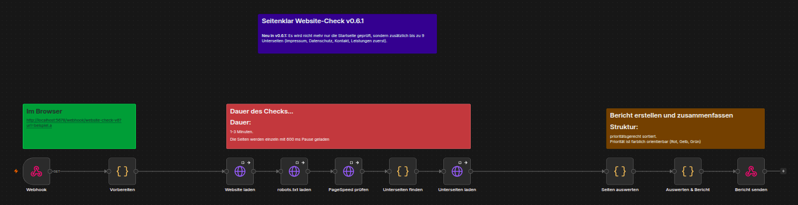

Ich finde, was Ihre Website Kunden kostet.
Ich prüfe Websites von Kleinbetrieben auf rechtliche Grundlagen, Sichtbarkeit bei Google und KI-Suchen und die Ladezeit am Handy – und erkläre das Ergebnis so, dass man es ohne IT-Wissen versteht.
Projekte ansehen So funktioniert'sEchte Besucher warten 4,4 s auf den Hauptinhalt (Ziel: unter 2,5 s)
Nicht eigenständig im Footer verlinkt
Alles vorhanden
Bis zu 21 Punkte in 5 Bereichen
Jeder Befund wird von mir zusätzlich von Hand im Browser kontrolliert – automatisch gefunden, menschlich bestätigt.
Grundlagen & Recht
HTTPS, Impressum und Datenschutzerklärung – sind sie vorhanden und leicht auffindbar?
Google-Sichtbarkeit
Titel, Beschreibung, Überschriften, Sitemap – versteht Google, was Sie anbieten und wo?
KI-Sichtbarkeit
Können ChatGPT, Perplexity & Co. Ihre Firmendaten lesen und Sie empfehlen?
Technik & Ladezeit
Mit echten Messdaten von Google: Wie lange warten Ihre Besucher am Handy wirklich?
Die ganze Website, nicht nur die Startseite
Zusätzlich zur Startseite prüfe ich bis zu 9 Unterseiten – Impressum, Datenschutz, Kontakt und Leistungen zuerst. Sind alle erreichbar? Hat jede Seite einen eigenen Titel und eine Beschreibung? Ist eine Seite versehentlich vor Google versteckt?
So läuft ein Check
Automatische Prüfung
Mein selbst gebautes Tool (n8n + Google PageSpeed) prüft die Startseite und bis zu 9 Unterseiten. Je nach Größe der Website dauert das 1 bis 3 Minuten.
Kontrolle von Hand
Jeder rote Punkt wird im Browser und im Quelltext nachgeprüft. Fehlalarme fliegen raus.
Verständlicher Bericht
Was ist dringend, was ist nur Feinschliff – und was bedeutet das für Ihre Kunden?
Ehrlich gesagt: Der Check prüft, ob etwas vorhanden ist – nicht, ob es rechtlich vollständig ist. Das ist keine Rechtsberatung; dafür sind WKO oder Anwalt zuständig.
Was im Hintergrund passiert
Die automatische Prüfung im Detail: Diese fünf Schritte führt mein Tool bei jedem Check der Reihe nach aus.
Adresse vorbereiten
Aus „beispiel.at“ wird eine saubere Adresse wie „https://beispiel.at/“.
n8n: Webhook → VorbereitenStartseite laden
Die Startseite und die Regeln für Suchmaschinen (robots.txt) werden abgerufen.
n8n: Website laden → robots.txt laden- Längster Schritt
Google misst die Ladezeit
Google PageSpeed testet die Seite wie ein Handy: Ladezeit, SEO und Barrierefreiheit.
n8n: PageSpeed prüfen - Neu
Unterseiten prüfen
Bis zu 9 Unterseiten werden nacheinander mit kurzer Pause abgerufen – das schont Ihren Server. Bereiche, die laut robots.txt gesperrt sind, bleiben tabu.
n8n: Unterseiten finden → laden → auswerten Bericht erstellen
Alle Ergebnisse werden bewertet und nach Dringlichkeit sortiert: Rot, Gelb, Grün.
n8n: Auswerten & Bericht → Bericht senden

Pilotprojekte & Kundenstimmen
Meine ersten Checks mache ich kostenlos als Pilotprojekte. Hier stehen nur echte Stimmen – mit schriftlicher Zustimmung der Betriebe.
Platz für Ihren Betrieb
Kostenloser Check im Rahmen meines Portfolio-Projekts. Hier erscheint danach – nur mit Ihrer Zustimmung – Ihr Feedback.
Platz für Ihren Betrieb
Ideal für Friseure, Handwerker, Praxen und kleine Läden in Oberösterreich.
Platz für Ihren Betrieb
Sie bekommen einen verständlichen Bericht – ich bekomme ehrliches Feedback.
Wer hinter Seitenklar steckt
Ich bin Ognjen, IT-Lehrling aus Oberösterreich. In meiner Freizeit betreibe ich ein eigenes Homelab und automatisiere Abläufe. Das Prüf-Tool hinter Seitenklar habe ich selbst entwickelt, um Kleinbetrieben zu zeigen, wo ihre Website Kunden verliert.
Interesse an einem Pilotprojekt?
Schreiben Sie mir einfach eine E-Mail mit der Adresse Ihrer Website.
E-Mail schreiben